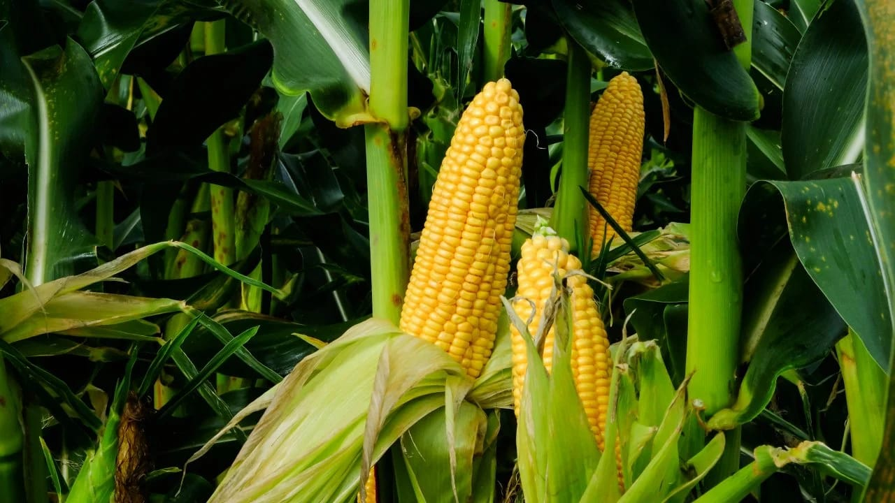
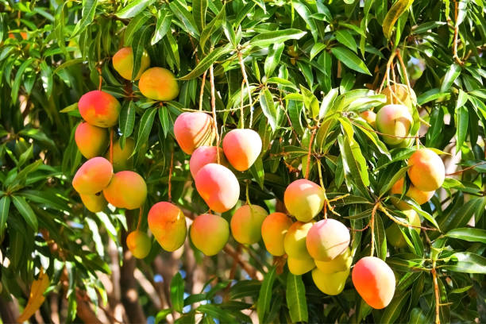
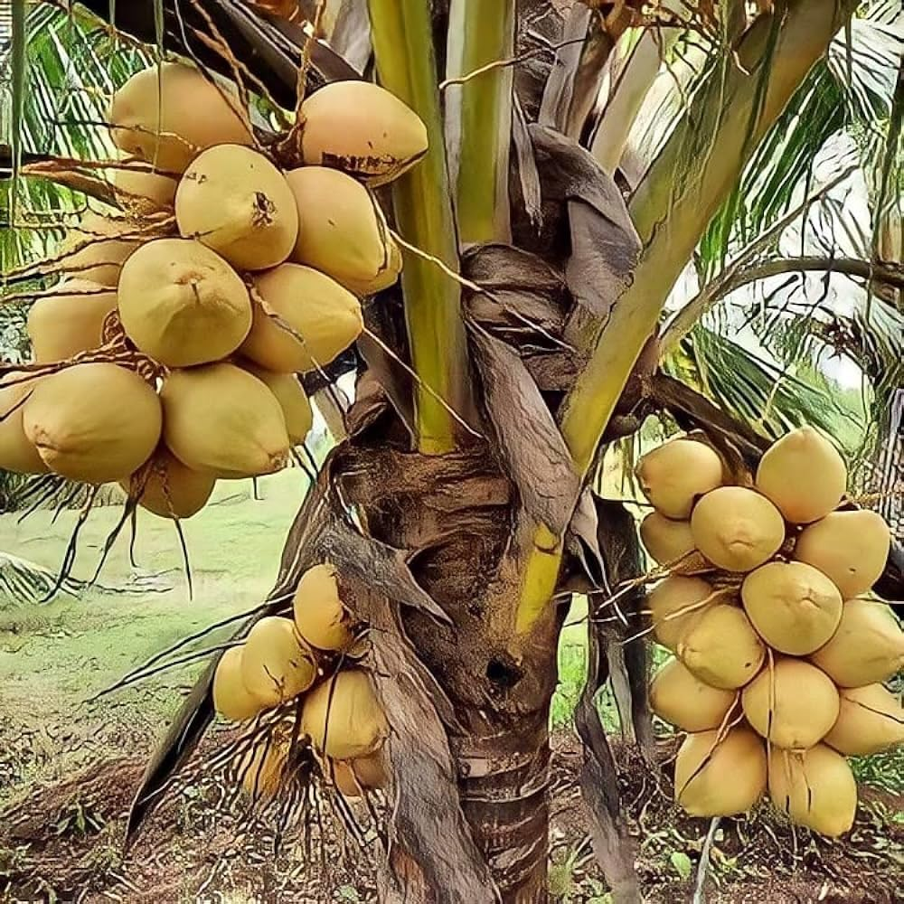
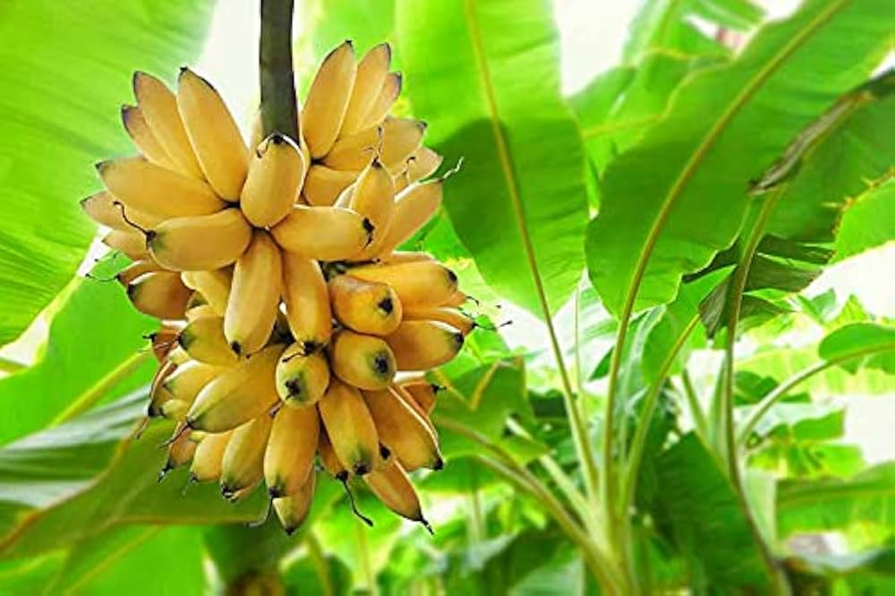
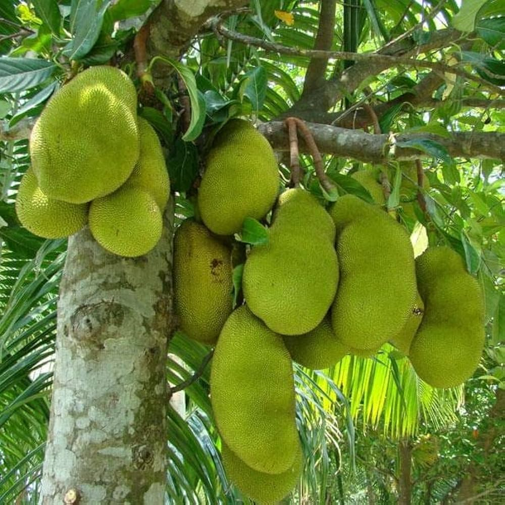

Agri Learn
Crop Category
Field Crops
Vegetables
Tree Plants
🎤 Speak
Field Crops
Wheat
Rice

Corn
Ragi
Sugarcane
Vegetables
Tomato
Onion
Potato
Garlic
Brinjal
Tree Plants

Mango

Coconut
Palmirah

Banana

Jackfruit
🌐 Translator
English
தமிழ் (Tamil)
हिंदी (Hindi)
తెలుగు (Telugu)
മലയാളം (Malayalam)
ಕನ್ನಡ (Kannada)
বাংলা (Bengali)
मराठी (Marathi)
ગુજરાતી (Gujarati)
ਪੰਜਾਬੀ (Punjabi)